Industry benchmarks · Volume V of VI · 109 entries · 433–541
Compute & motion.
WebGPU compute, thick lines, oceans and real-time simulation. Six volumes, 650 benchmark entries, one catalog. Every card opens a page held in this repository: a rendered three.js example, a local project demo, the three.js source room, or a source dossier.
Volume V
109 entries · WebGPU compute, thick lines, oceans and real-time simulation.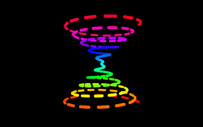
433WebGPU Lines Fat Raycasting
Official three.js example “WebGPU Lines Fat Raycasting”. The plate is its rendered screenshot; the card opens the same runnable page from this repository.
mrdoob/three.js · examples/webgpu_lines_fat_raycasting.html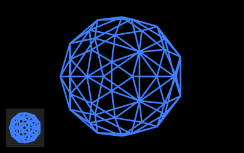
434WebGPU Lines Fat Wireframe
Official three.js example “WebGPU Lines Fat Wireframe”. The plate is its rendered screenshot; the card opens the same runnable page from this repository.
mrdoob/three.js · examples/webgpu_lines_fat_wireframe.htmlWebGPU Loader glTF
Official three.js example “WebGPU Loader glTF”. The plate is its rendered screenshot; the card opens the same runnable page from this repository.
mrdoob/three.js · examples/webgpu_loader_gltf.htmlWebGPU Loader glTF Anisotropy
Official three.js example “WebGPU Loader glTF Anisotropy”. The plate is its rendered screenshot; the card opens the same runnable page from this repository.
mrdoob/three.js · examples/webgpu_loader_gltf_anisotropy.html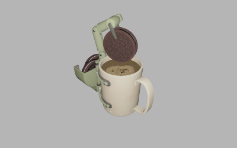
437WebGPU Loader glTF Compressed
Official three.js example “WebGPU Loader glTF Compressed”. The plate is its rendered screenshot; the card opens the same runnable page from this repository.
mrdoob/three.js · examples/webgpu_loader_gltf_compressed.html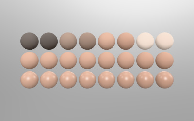
438WebGPU Loader glTF Diffuse Roughness
Official three.js example “WebGPU Loader glTF Diffuse Roughness”. The plate is its rendered screenshot; the card opens the same runnable page from this repository.
mrdoob/three.js · examples/webgpu_loader_gltf_diffuse_roughness.html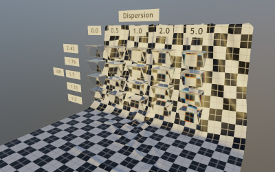
439WebGPU Loader glTF Dispersion
Official three.js example “WebGPU Loader glTF Dispersion”. The plate is its rendered screenshot; the card opens the same runnable page from this repository.
mrdoob/three.js · examples/webgpu_loader_gltf_dispersion.htmlWebGPU Loader glTF Iridescence
Official three.js example “WebGPU Loader glTF Iridescence”. The plate is its rendered screenshot; the card opens the same runnable page from this repository.
mrdoob/three.js · examples/webgpu_loader_gltf_iridescence.html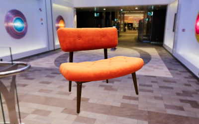
441WebGPU Loader glTF Sheen
Official three.js example “WebGPU Loader glTF Sheen”. The plate is its rendered screenshot; the card opens the same runnable page from this repository.
mrdoob/three.js · examples/webgpu_loader_gltf_sheen.htmlWebGPU Loader glTF Transmission
Official three.js example “WebGPU Loader glTF Transmission”. The plate is its rendered screenshot; the card opens the same runnable page from this repository.
mrdoob/three.js · examples/webgpu_loader_gltf_transmission.html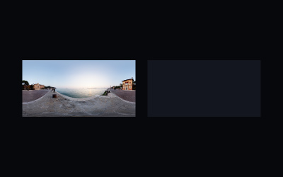
443WebGPU Loader Jpegxl
Official three.js example “WebGPU Loader Jpegxl”. The plate is its rendered screenshot; the card opens the same runnable page from this repository.
mrdoob/three.js · examples/webgpu_loader_jpegxl.html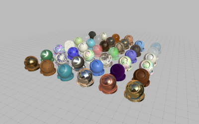
444WebGPU Loader Materialx
Official three.js example “WebGPU Loader Materialx”. The plate is its rendered screenshot; the card opens the same runnable page from this repository.
mrdoob/three.js · examples/webgpu_loader_materialx.html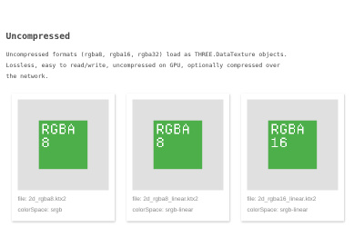
445WebGPU Loader Texture Ktx2
Official three.js example “WebGPU Loader Texture Ktx2”. The plate is its rendered screenshot; the card opens the same runnable page from this repository.
mrdoob/three.js · examples/webgpu_loader_texture_ktx2.htmlWebGPU Loader Vdb
Official three.js example “WebGPU Loader Vdb”. The plate is its rendered screenshot; the card opens the same runnable page from this repository.
mrdoob/three.js · examples/webgpu_loader_vdb.html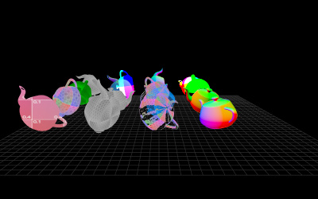
447WebGPU Materials
Official three.js example “WebGPU Materials”. The plate is its rendered screenshot; the card opens the same runnable page from this repository.
mrdoob/three.js · examples/webgpu_materials.html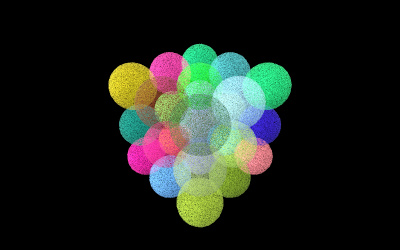
448WebGPU Materials Alphahash
Official three.js example “WebGPU Materials Alphahash”. The plate is its rendered screenshot; the card opens the same runnable page from this repository.
mrdoob/three.js · examples/webgpu_materials_alphahash.html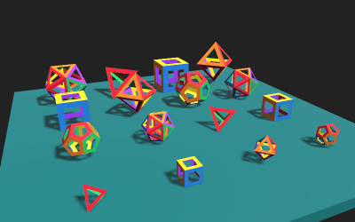
449WebGPU Materials Arrays
Official three.js example “WebGPU Materials Arrays”. The plate is its rendered screenshot; the card opens the same runnable page from this repository.
mrdoob/three.js · examples/webgpu_materials_arrays.html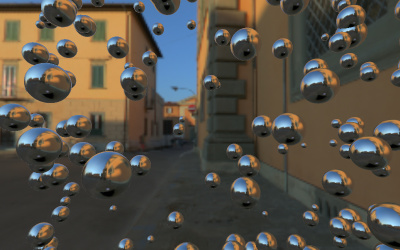
450WebGPU Materials Basic
Official three.js example “WebGPU Materials Basic”. The plate is its rendered screenshot; the card opens the same runnable page from this repository.
mrdoob/three.js · examples/webgpu_materials_basic.html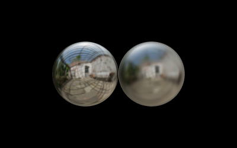
451WebGPU Materials Cubemap Mipmaps
Official three.js example “WebGPU Materials Cubemap Mipmaps”. The plate is its rendered screenshot; the card opens the same runnable page from this repository.
mrdoob/three.js · examples/webgpu_materials_cubemap_mipmaps.html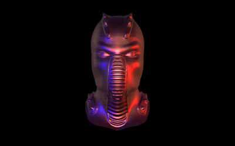
452WebGPU Materials Displacementmap
Official three.js example “WebGPU Materials Displacementmap”. The plate is its rendered screenshot; the card opens the same runnable page from this repository.
mrdoob/three.js · examples/webgpu_materials_displacementmap.html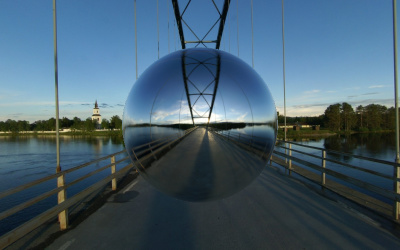
453WebGPU Materials Envmaps
Official three.js example “WebGPU Materials Envmaps”. The plate is its rendered screenshot; the card opens the same runnable page from this repository.
mrdoob/three.js · examples/webgpu_materials_envmaps.html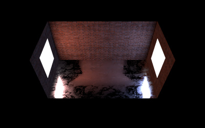
454WebGPU Materials Envmaps Bpcem
Official three.js example “WebGPU Materials Envmaps Bpcem”. The plate is its rendered screenshot; the card opens the same runnable page from this repository.
mrdoob/three.js · examples/webgpu_materials_envmaps_bpcem.htmlWebGPU Materials Envmaps Groundprojected
Official three.js example “WebGPU Materials Envmaps Groundprojected”. The plate is its rendered screenshot; the card opens the same runnable page from this repository.
mrdoob/three.js · examples/webgpu_materials_envmaps_groundprojected.html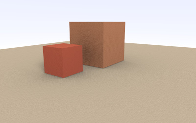
456WebGPU Materials Lightmap
Official three.js example “WebGPU Materials Lightmap”. The plate is its rendered screenshot; the card opens the same runnable page from this repository.
mrdoob/three.js · examples/webgpu_materials_lightmap.htmlWebGPU Materials Matcap
Official three.js example “WebGPU Materials Matcap”. The plate is its rendered screenshot; the card opens the same runnable page from this repository.
mrdoob/three.js · examples/webgpu_materials_matcap.html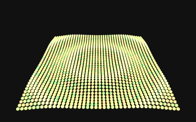
458WebGPU Materials Node Instance
Official three.js example “WebGPU Materials Node Instance”. The plate is its rendered screenshot; the card opens the same runnable page from this repository.
mrdoob/three.js · examples/webgpu_materials_node_instance.htmlWebGPU Materials Retroreflection
Official three.js example “WebGPU Materials Retroreflection”. The plate is its rendered screenshot; the card opens the same runnable page from this repository.
mrdoob/three.js · examples/webgpu_materials_retroreflection.html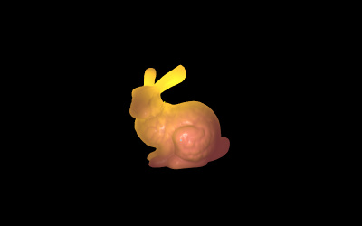
460WebGPU Materials Sss
Official three.js example “WebGPU Materials Sss”. The plate is its rendered screenshot; the card opens the same runnable page from this repository.
mrdoob/three.js · examples/webgpu_materials_sss.htmlWebGPU Materials Texture Html
Official three.js example “WebGPU Materials Texture Html”. The plate is its rendered screenshot; the card opens the same runnable page from this repository.
mrdoob/three.js · examples/webgpu_materials_texture_html.html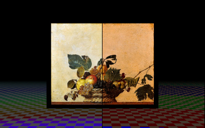
462WebGPU Materials Texture Manualmipmap
Official three.js example “WebGPU Materials Texture Manualmipmap”. The plate is its rendered screenshot; the card opens the same runnable page from this repository.
mrdoob/three.js · examples/webgpu_materials_texture_manualmipmap.html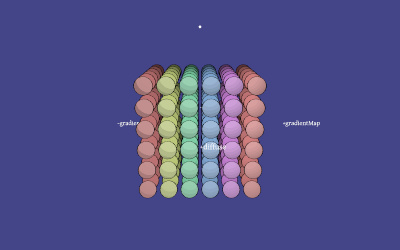
463WebGPU Materials Toon
Official three.js example “WebGPU Materials Toon”. The plate is its rendered screenshot; the card opens the same runnable page from this repository.
mrdoob/three.js · examples/webgpu_materials_toon.html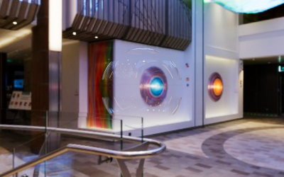
464WebGPU Materials Transmission
Official three.js example “WebGPU Materials Transmission”. The plate is its rendered screenshot; the card opens the same runnable page from this repository.
mrdoob/three.js · examples/webgpu_materials_transmission.html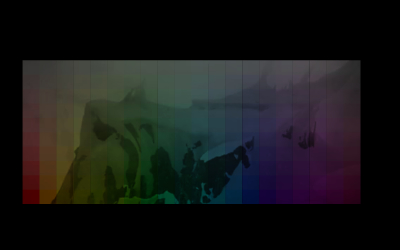
465WebGPU Materials Video
Official three.js example “WebGPU Materials Video”. The plate is its rendered screenshot; the card opens the same runnable page from this repository.
mrdoob/three.js · examples/webgpu_materials_video.html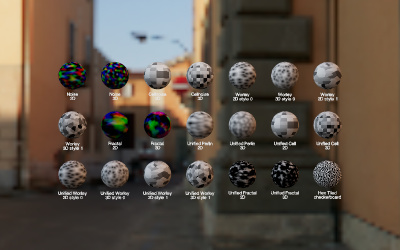
466WebGPU Materialx Noise
Official three.js example “WebGPU Materialx Noise”. The plate is its rendered screenshot; the card opens the same runnable page from this repository.
mrdoob/three.js · examples/webgpu_materialx_noise.html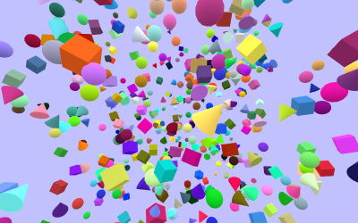
467WebGPU Mesh Batch
Official three.js example “WebGPU Mesh Batch”. The plate is its rendered screenshot; the card opens the same runnable page from this repository.
mrdoob/three.js · examples/webgpu_mesh_batch.html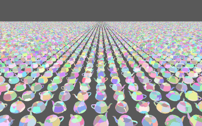
468WebGPU Meshlets
Official three.js example “WebGPU Meshlets”. The plate is its rendered screenshot; the card opens the same runnable page from this repository.
mrdoob/three.js · examples/webgpu_meshlets.html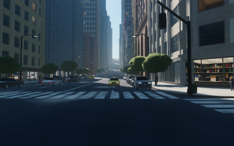
469WebGPU Meshlets City
Official three.js example “WebGPU Meshlets City”. The plate is its rendered screenshot; the card opens the same runnable page from this repository.
mrdoob/three.js · examples/webgpu_meshlets_city.html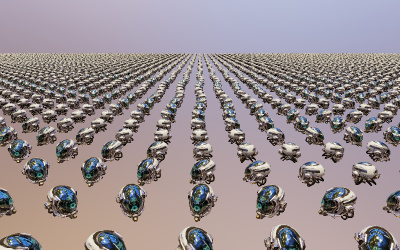
470WebGPU Meshlets Ibl
Official three.js example “WebGPU Meshlets Ibl”. The plate is its rendered screenshot; the card opens the same runnable page from this repository.
mrdoob/three.js · examples/webgpu_meshlets_ibl.html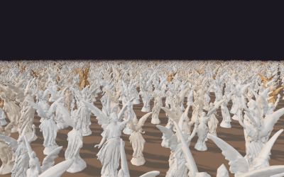
471WebGPU Meshlets Instanced
Official three.js example “WebGPU Meshlets Instanced”. The plate is its rendered screenshot; the card opens the same runnable page from this repository.
mrdoob/three.js · examples/webgpu_meshlets_instanced.html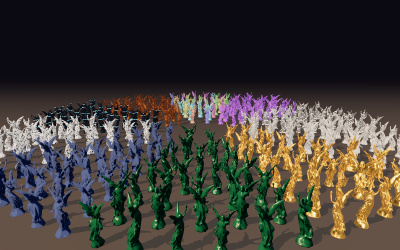
472WebGPU Meshlets Materials
Official three.js example “WebGPU Meshlets Materials”. The plate is its rendered screenshot; the card opens the same runnable page from this repository.
mrdoob/three.js · examples/webgpu_meshlets_materials.html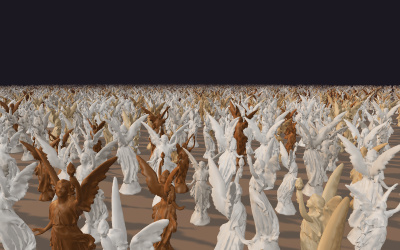
473WebGPU Meshlets Meshes
Official three.js example “WebGPU Meshlets Meshes”. The plate is its rendered screenshot; the card opens the same runnable page from this repository.
mrdoob/three.js · examples/webgpu_meshlets_meshes.html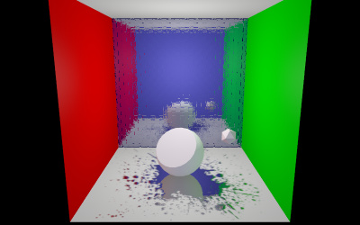
474WebGPU Mirror
Official three.js example “WebGPU Mirror”. The plate is its rendered screenshot; the card opens the same runnable page from this repository.
mrdoob/three.js · examples/webgpu_mirror.html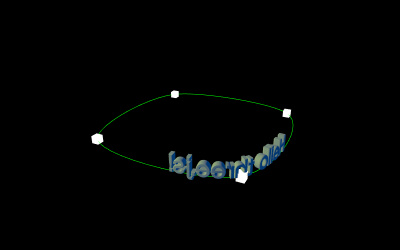
475WebGPU Modifier Curve
Official three.js example “WebGPU Modifier Curve”. The plate is its rendered screenshot; the card opens the same runnable page from this repository.
mrdoob/three.js · examples/webgpu_modifier_curve.html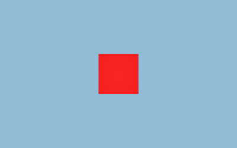
476WebGPU Morphtargets
Official three.js example “WebGPU Morphtargets”. The plate is its rendered screenshot; the card opens the same runnable page from this repository.
mrdoob/three.js · examples/webgpu_morphtargets.html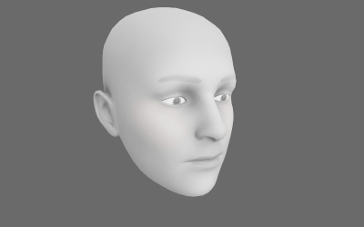
477WebGPU Morphtargets Face
Official three.js example “WebGPU Morphtargets Face”. The plate is its rendered screenshot; the card opens the same runnable page from this repository.
mrdoob/three.js · examples/webgpu_morphtargets_face.html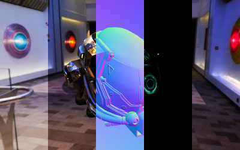
478WebGPU Mrt
Official three.js example “WebGPU Mrt”. The plate is its rendered screenshot; the card opens the same runnable page from this repository.
mrdoob/three.js · examples/webgpu_mrt.html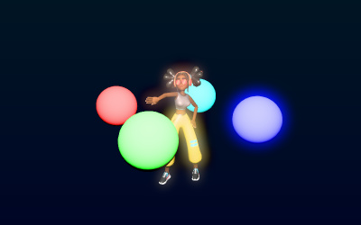
479WebGPU Mrt Mask
Official three.js example “WebGPU Mrt Mask”. The plate is its rendered screenshot; the card opens the same runnable page from this repository.
mrdoob/three.js · examples/webgpu_mrt_mask.html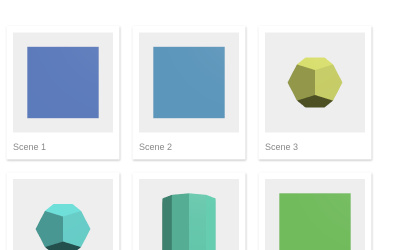
480WebGPU Multiple Canvas
Official three.js example “WebGPU Multiple Canvas”. The plate is its rendered screenshot; the card opens the same runnable page from this repository.
mrdoob/three.js · examples/webgpu_multiple_canvas.html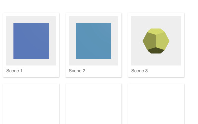
481WebGPU Multiple Elements
Official three.js example “WebGPU Multiple Elements”. The plate is its rendered screenshot; the card opens the same runnable page from this repository.
mrdoob/three.js · examples/webgpu_multiple_elements.htmlWebGPU Multiple Rendertargets
Official three.js example “WebGPU Multiple Rendertargets”. The plate is its rendered screenshot; the card opens the same runnable page from this repository.
mrdoob/three.js · examples/webgpu_multiple_rendertargets.html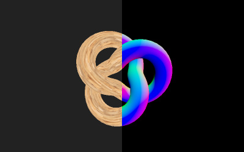
483WebGPU Multiple Rendertargets Readback
Official three.js example “WebGPU Multiple Rendertargets Readback”. The plate is its rendered screenshot; the card opens the same runnable page from this repository.
mrdoob/three.js · examples/webgpu_multiple_rendertargets_readback.html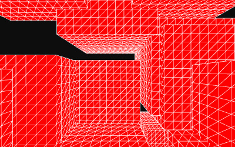
484WebGPU Multisampled Renderbuffers
Official three.js example “WebGPU Multisampled Renderbuffers”. The plate is its rendered screenshot; the card opens the same runnable page from this repository.
mrdoob/three.js · examples/webgpu_multisampled_renderbuffers.html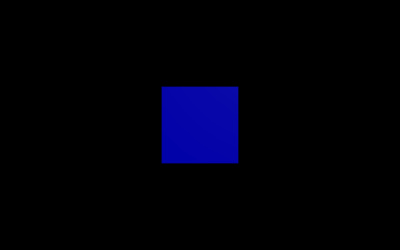
485WebGPU Occlusion
Official three.js example “WebGPU Occlusion”. The plate is its rendered screenshot; the card opens the same runnable page from this repository.
mrdoob/three.js · examples/webgpu_occlusion.html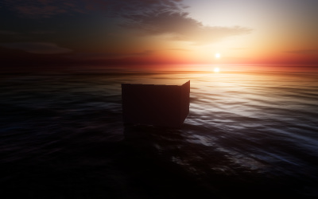
486WebGPU Ocean
Official three.js example “WebGPU Ocean”. The plate is its rendered screenshot; the card opens the same runnable page from this repository.
mrdoob/three.js · examples/webgpu_ocean.html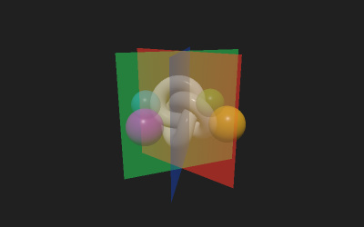
487WebGPU Oit
Official three.js example “WebGPU Oit”. The plate is its rendered screenshot; the card opens the same runnable page from this repository.
mrdoob/three.js · examples/webgpu_oit.html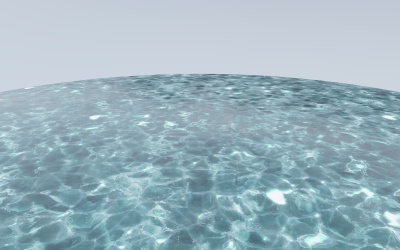
488WebGPU Parallax UV
Official three.js example “WebGPU Parallax UV”. The plate is its rendered screenshot; the card opens the same runnable page from this repository.
mrdoob/three.js · examples/webgpu_parallax_uv.html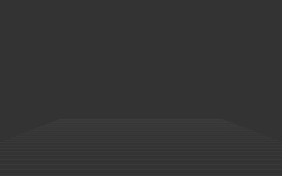
489WebGPU Particles
Official three.js example “WebGPU Particles”. The plate is its rendered screenshot; the card opens the same runnable page from this repository.
mrdoob/three.js · examples/webgpu_particles.htmlWebGPU Particles Soft
Official three.js example “WebGPU Particles Soft”. The plate is its rendered screenshot; the card opens the same runnable page from this repository.
mrdoob/three.js · examples/webgpu_particles_soft.html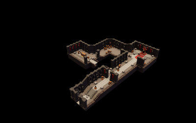
491WebGPU Performance
Official three.js example “WebGPU Performance”. The plate is its rendered screenshot; the card opens the same runnable page from this repository.
mrdoob/three.js · examples/webgpu_performance.html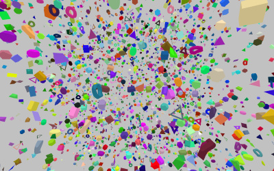
492WebGPU Performance Renderbundle
Official three.js example “WebGPU Performance Renderbundle”. The plate is its rendered screenshot; the card opens the same runnable page from this repository.
mrdoob/three.js · examples/webgpu_performance_renderbundle.html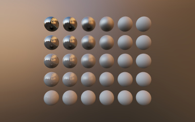
493WebGPU Pmrem Cubemap
Official three.js example “WebGPU Pmrem Cubemap”. The plate is its rendered screenshot; the card opens the same runnable page from this repository.
mrdoob/three.js · examples/webgpu_pmrem_cubemap.htmlWebGPU Pmrem Equirectangular
Official three.js example “WebGPU Pmrem Equirectangular”. The plate is its rendered screenshot; the card opens the same runnable page from this repository.
mrdoob/three.js · examples/webgpu_pmrem_equirectangular.htmlWebGPU Pmrem Scene
Official three.js example “WebGPU Pmrem Scene”. The plate is its rendered screenshot; the card opens the same runnable page from this repository.
mrdoob/three.js · examples/webgpu_pmrem_scene.htmlWebGPU Pmrem Test
Official three.js example “WebGPU Pmrem Test”. The plate is its rendered screenshot; the card opens the same runnable page from this repository.
mrdoob/three.js · examples/webgpu_pmrem_test.htmlWebGPU Portal
Official three.js example “WebGPU Portal”. The plate is its rendered screenshot; the card opens the same runnable page from this repository.
mrdoob/three.js · examples/webgpu_portal.htmlWebGPU Postprocessing
Official three.js example “WebGPU Postprocessing”. The plate is its rendered screenshot; the card opens the same runnable page from this repository.
mrdoob/three.js · examples/webgpu_postprocessing.htmlWebGPU Postprocessing 3dlut
Official three.js example “WebGPU Postprocessing 3dlut”. The plate is its rendered screenshot; the card opens the same runnable page from this repository.
mrdoob/three.js · examples/webgpu_postprocessing_3dlut.htmlWebGPU Postprocessing Afterimage
Official three.js example “WebGPU Postprocessing Afterimage”. The plate is its rendered screenshot; the card opens the same runnable page from this repository.
mrdoob/three.js · examples/webgpu_postprocessing_afterimage.htmlWebGPU Postprocessing Anamorphic
Official three.js example “WebGPU Postprocessing Anamorphic”. The plate is its rendered screenshot; the card opens the same runnable page from this repository.
mrdoob/three.js · examples/webgpu_postprocessing_anamorphic.htmlWebGPU Postprocessing AO
Official three.js example “WebGPU Postprocessing AO”. The plate is its rendered screenshot; the card opens the same runnable page from this repository.
mrdoob/three.js · examples/webgpu_postprocessing_ao.htmlWebGPU Postprocessing Bloom
Official three.js example “WebGPU Postprocessing Bloom”. The plate is its rendered screenshot; the card opens the same runnable page from this repository.
mrdoob/three.js · examples/webgpu_postprocessing_bloom.htmlWebGPU Postprocessing Bloom Emissive
Official three.js example “WebGPU Postprocessing Bloom Emissive”. The plate is its rendered screenshot; the card opens the same runnable page from this repository.
mrdoob/three.js · examples/webgpu_postprocessing_bloom_emissive.htmlWebGPU Postprocessing Bloom Selective
Official three.js example “WebGPU Postprocessing Bloom Selective”. The plate is its rendered screenshot; the card opens the same runnable page from this repository.
mrdoob/three.js · examples/webgpu_postprocessing_bloom_selective.htmlWebGPU Postprocessing Ca
Official three.js example “WebGPU Postprocessing Ca”. The plate is its rendered screenshot; the card opens the same runnable page from this repository.
mrdoob/three.js · examples/webgpu_postprocessing_ca.htmlWebGPU Postprocessing Difference
Official three.js example “WebGPU Postprocessing Difference”. The plate is its rendered screenshot; the card opens the same runnable page from this repository.
mrdoob/three.js · examples/webgpu_postprocessing_difference.htmlWebGPU Postprocessing Direct
Official three.js example “WebGPU Postprocessing Direct”. The plate is its rendered screenshot; the card opens the same runnable page from this repository.
mrdoob/three.js · examples/webgpu_postprocessing_direct.htmlWebGPU Postprocessing Dof
Official three.js example “WebGPU Postprocessing Dof”. The plate is its rendered screenshot; the card opens the same runnable page from this repository.
mrdoob/three.js · examples/webgpu_postprocessing_dof.htmlWebGPU Postprocessing Dof Basic
Official three.js example “WebGPU Postprocessing Dof Basic”. The plate is its rendered screenshot; the card opens the same runnable page from this repository.
mrdoob/three.js · examples/webgpu_postprocessing_dof_basic.htmlWebGPU Postprocessing Fog
Official three.js example “WebGPU Postprocessing Fog”. The plate is its rendered screenshot; the card opens the same runnable page from this repository.
mrdoob/three.js · examples/webgpu_postprocessing_fog.htmlWebGPU Postprocessing Fxaa
Official three.js example “WebGPU Postprocessing Fxaa”. The plate is its rendered screenshot; the card opens the same runnable page from this repository.
mrdoob/three.js · examples/webgpu_postprocessing_fxaa.htmlWebGPU Postprocessing Godrays
Official three.js example “WebGPU Postprocessing Godrays”. The plate is its rendered screenshot; the card opens the same runnable page from this repository.
mrdoob/three.js · examples/webgpu_postprocessing_godrays.htmlWebGPU Postprocessing Lensflare
Official three.js example “WebGPU Postprocessing Lensflare”. The plate is its rendered screenshot; the card opens the same runnable page from this repository.
mrdoob/three.js · examples/webgpu_postprocessing_lensflare.htmlWebGPU Postprocessing Masking
Official three.js example “WebGPU Postprocessing Masking”. The plate is its rendered screenshot; the card opens the same runnable page from this repository.
mrdoob/three.js · examples/webgpu_postprocessing_masking.htmlWebGPU Postprocessing Motion Blur
Official three.js example “WebGPU Postprocessing Motion Blur”. The plate is its rendered screenshot; the card opens the same runnable page from this repository.
mrdoob/three.js · examples/webgpu_postprocessing_motion_blur.htmlWebGPU Postprocessing Outline
Official three.js example “WebGPU Postprocessing Outline”. The plate is its rendered screenshot; the card opens the same runnable page from this repository.
mrdoob/three.js · examples/webgpu_postprocessing_outline.htmlWebGPU Postprocessing Pixel
Official three.js example “WebGPU Postprocessing Pixel”. The plate is its rendered screenshot; the card opens the same runnable page from this repository.
mrdoob/three.js · examples/webgpu_postprocessing_pixel.htmlWebGPU Postprocessing Radial Blur
Official three.js example “WebGPU Postprocessing Radial Blur”. The plate is its rendered screenshot; the card opens the same runnable page from this repository.
mrdoob/three.js · examples/webgpu_postprocessing_radial_blur.html 520
520
WebGPU Postprocessing Retro
Official three.js example “WebGPU Postprocessing Retro”. The plate is its rendered screenshot; the card opens the same runnable page from this repository.
mrdoob/three.js · examples/webgpu_postprocessing_retro.htmlWebGPU Postprocessing Smaa
Official three.js example “WebGPU Postprocessing Smaa”. The plate is its rendered screenshot; the card opens the same runnable page from this repository.
mrdoob/three.js · examples/webgpu_postprocessing_smaa.htmlWebGPU Postprocessing Sobel
Official three.js example “WebGPU Postprocessing Sobel”. The plate is its rendered screenshot; the card opens the same runnable page from this repository.
mrdoob/three.js · examples/webgpu_postprocessing_sobel.htmlWebGPU Postprocessing Ssaa
Official three.js example “WebGPU Postprocessing Ssaa”. The plate is its rendered screenshot; the card opens the same runnable page from this repository.
mrdoob/three.js · examples/webgpu_postprocessing_ssaa.htmlWebGPU Postprocessing Ssgi
Official three.js example “WebGPU Postprocessing Ssgi”. The plate is its rendered screenshot; the card opens the same runnable page from this repository.
mrdoob/three.js · examples/webgpu_postprocessing_ssgi.htmlWebGPU Postprocessing Ssgi Ballpool
Official three.js example “WebGPU Postprocessing Ssgi Ballpool”. The plate is its rendered screenshot; the card opens the same runnable page from this repository.
mrdoob/three.js · examples/webgpu_postprocessing_ssgi_ballpool.htmlWebGPU Postprocessing SSR Animation
Official three.js example “WebGPU Postprocessing SSR Animation”. The plate is its rendered screenshot; the card opens the same runnable page from this repository.
mrdoob/three.js · examples/webgpu_postprocessing_ssr_animation.htmlWebGPU Postprocessing SSR Mirror
Official three.js example “WebGPU Postprocessing SSR Mirror”. The plate is its rendered screenshot; the card opens the same runnable page from this repository.
mrdoob/three.js · examples/webgpu_postprocessing_ssr_mirror.htmlWebGPU Postprocessing SSR Stochastic
Official three.js example “WebGPU Postprocessing SSR Stochastic”. The plate is its rendered screenshot; the card opens the same runnable page from this repository.
mrdoob/three.js · examples/webgpu_postprocessing_ssr_stochastic.htmlWebGPU Postprocessing Sss
Official three.js example “WebGPU Postprocessing Sss”. The plate is its rendered screenshot; the card opens the same runnable page from this repository.
mrdoob/three.js · examples/webgpu_postprocessing_sss.htmlWebGPU Postprocessing Traa
Official three.js example “WebGPU Postprocessing Traa”. The plate is its rendered screenshot; the card opens the same runnable page from this repository.
mrdoob/three.js · examples/webgpu_postprocessing_traa.htmlWebGPU Postprocessing Transition
Official three.js example “WebGPU Postprocessing Transition”. The plate is its rendered screenshot; the card opens the same runnable page from this repository.
mrdoob/three.js · examples/webgpu_postprocessing_transition.htmlWebGPU Procedural Texture
Official three.js example “WebGPU Procedural Texture”. The plate is its rendered screenshot; the card opens the same runnable page from this repository.
mrdoob/three.js · examples/webgpu_procedural_texture.htmlWebGPU Reflection
Official three.js example “WebGPU Reflection”. The plate is its rendered screenshot; the card opens the same runnable page from this repository.
mrdoob/three.js · examples/webgpu_reflection.htmlWebGPU Reflection Blurred
Official three.js example “WebGPU Reflection Blurred”. The plate is its rendered screenshot; the card opens the same runnable page from this repository.
mrdoob/three.js · examples/webgpu_reflection_blurred.htmlWebGPU Reflection Roughness
Official three.js example “WebGPU Reflection Roughness”. The plate is its rendered screenshot; the card opens the same runnable page from this repository.
mrdoob/three.js · examples/webgpu_reflection_roughness.htmlWebGPU Refraction
Official three.js example “WebGPU Refraction”. The plate is its rendered screenshot; the card opens the same runnable page from this repository.
mrdoob/three.js · examples/webgpu_refraction.htmlWebGPU Renderer Pathtracer
Official three.js example “WebGPU Renderer Pathtracer”. The plate is its rendered screenshot; the card opens the same runnable page from this repository.
mrdoob/three.js · examples/webgpu_renderer_pathtracer.htmlWebGPU Rendertarget 2d-array 3D
Official three.js example “WebGPU Rendertarget 2d-array 3D”. The plate is its rendered screenshot; the card opens the same runnable page from this repository.
mrdoob/three.js · examples/webgpu_rendertarget_2d-array_3d.htmlWebGPU Reversed Depth Buffer
Official three.js example “WebGPU Reversed Depth Buffer”. The plate is its rendered screenshot; the card opens the same runnable page from this repository.
mrdoob/three.js · examples/webgpu_reversed_depth_buffer.htmlWebGPU Rtt
Official three.js example “WebGPU Rtt”. The plate is its rendered screenshot; the card opens the same runnable page from this repository.
mrdoob/three.js · examples/webgpu_rtt.htmlWebGPU Sandbox
Official three.js example “WebGPU Sandbox”. The plate is its rendered screenshot; the card opens the same runnable page from this repository.
mrdoob/three.js · examples/webgpu_sandbox.htmlNothing in this volume matches that. Try a shorter word.